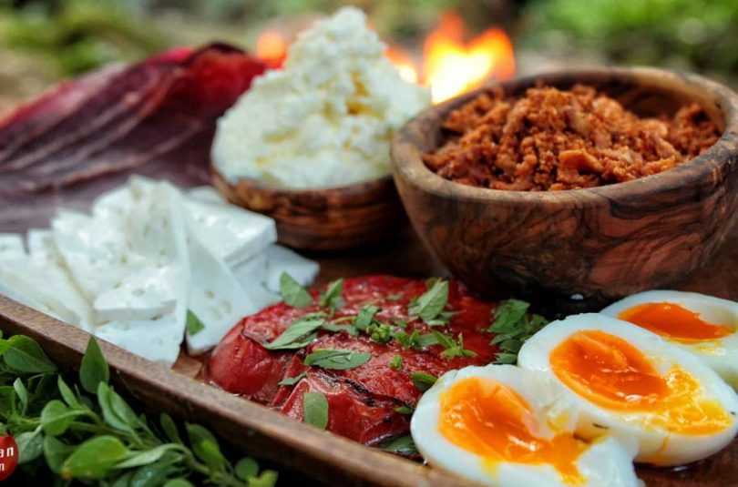
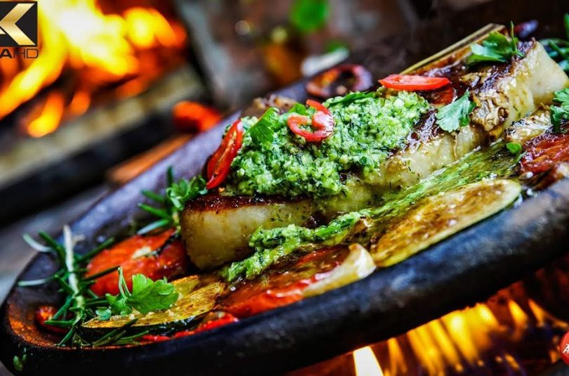

RECIPE
Subscribe for newsletters and all upcoming recipes
Latest Post
October 5, 2018
DOG KEBAB – WOULD YOU TRY THAT
in Beef, Pork, Recipes
Everyone likes hot-dogs and kebabs, right? So why don’t we mix it in one delicious dish?
READ MORE ▶
October 4, 2018
ULTIMATE CHEESE WELLINGTON – PRIMITIVE METHOD
in Recipes, Vegetarian
Cheese overdose! We’re deeply grateful for this anonymous
READ MORE ▶
September 28, 2018
BEST PESTO CHICKEN PASTA – EXTREMELY TASTY!
in Chicken, Pasta, Recipes
Culinary never have been so easy and beautiful at once yet!
READ MORE ▶
September 27, 2018
BEST BBQ RIBS EVER! – YOU DON’T WANT TO SKIP THIS RECIPE!
in Beef, Recipes
What can be better than BBQed ribs? Slow-cooked BBQ beef
READ MORE ▶
September 20, 2018
BEST SATAY
in Chicken, Recipes
Awesome and fun to cook Indonesian dish made in the AlmazanKitchen style with fresh potato puree garnish
READ MORE ▶
September 19, 2018
KING OF FONDUE – CHEESE EXTREME
in Recipes
The one and only true food ASMR show and cheese foodporn on the Internet!
READ MORE ▶
September 13, 2018
BEST PIE IN THE WORLD – YOU WON’T BELIEVE
in Dessert, Recipes
Dessert time, all are invited to the party! This amazing pear cake with a fruit topping is just something!
READ MORE ▶
Serbian
Spring
SERBIAN BREAKFAST
– TOMATO STEAK COAL BAKED EGG DELICACIES
We bet you’ve been asking yourself:
“How do these guys live? What’s different in Serbia?
Autumn
SERBIAN BURGER
– PLJESKAVICA
We have something really special for you.
You will fall in love with the first bite.
Be ready to accept our gift from the heart!
Winter
SERBIAN USTIPCI
– TRADITIONAL MEAT & CHEESE BALLS COOKED ON FIRE
Hi and welcome to AlmazanKitchen!
One of a kind Serbian meatballs with an
improvised awesome creamy
By Season
Spring
SPRING ROLLS
This dish will blow your mind! Crispy spring rolls from
handmade dough with coal slow cooked chicken meat
that simply melts in your mouth!
Autumn
GODLIKE SANDWICH
The most satisfying autumn sandwich video made
in the beautiful yellow Serbian forest fullyscattered
with the fallen leaves.
Winter
EPIC GLAZED AVOCADO LOIN
Marvelous, very delicious and awesome dish
made from improvised ingredients. Tender
and fresh loin cut
About Us
Almazan Kitchen’s Philosophy
What is the right diet for homo sapiens? Almazan Kitchen don’t believe in
taboos periodically caused by globalization trends. We look for the food we
have been eating as a species long enough so that it has formed us and our
taste at the genetic level during the evolution. Therefore, we turn back to
main ingredients that have been neglected, such as fire, different biosystems
of microbial cultures, ancient techniques of food preparation, whereas the blockquote
ritual, atmosphere and above all, passion, are necessary.
Not only do you use natural ingredients, you cook with animals. Animals don't feed on artificial feed and they don't eat natural ingredients (original animals don't eat feed). They live by hunting.
We share withyou our passion for simple and delicious recipes,using organic homemade ingredients with a note of Serbian traditional cuisine! We cook on fire & coal, mixing different cooking techniques and styles, tho all our recipes can be prepared by you at your home.


Latest Posts
75 DAYS OLD MEAT
– BEST STEAK WE EVER MADE
This is a new record for AlmazanKitchen
– 75 days old meat for steak!

SPIN-ROASTED CHICKEN ON
A ROPE – ASMR OVER 9000!
Beautiful sunny day and it is
wonderful hang-roasted chicken